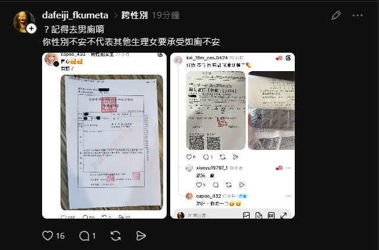

柠凉
@NL8526
能不能让顺直来点别的反跨话题，天天起来 年年起来都绕来绕去吵着一成不变的话题🤔
噢要不然就是你永远都是男的/女的🤓

我是錒又🍥
@Kai_15m_cos
我她媽跨性別怎麼你了 操你媽 我去廁所還是去男廁 不然就無障礙 我礙到你了? 擋到你的蛋糕了? 我做什麼事 乾你屁事 沒有害到社會大眾 還是有基本common sense 只會上來吵 引戰 幹 https://t.co/LiA3gbTvFL